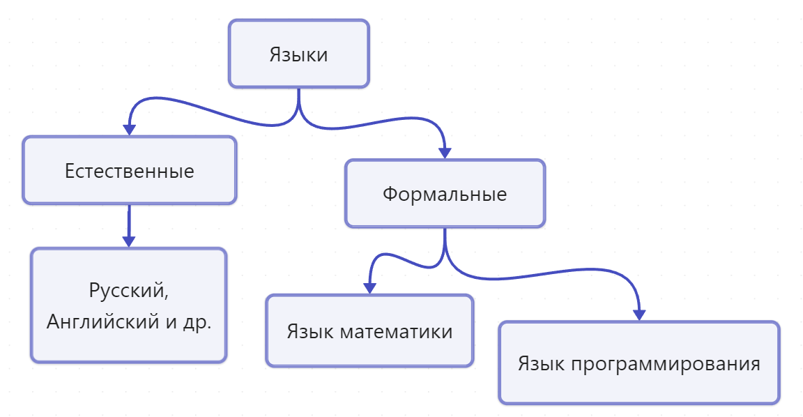

Изучите основы формальных языков и познакомьтесь с языком программирования Python
Формальный язык — это искусственно созданный язык со строгими синтаксисом и семантикой, используемый в математике, логике и компьютерных науках. Он исключает неоднозначности.
Python создан в 1989–1991 годах Гвидо ван Россумом. Вдохновлён проектом ABC, учёл важность обратной связи и сообщества.
Высокоуровневый, интерпретируемый, с читаемым синтаксисом.
проверка синтаксиса
перевод в байт-код
запуск на виртуальной машине Python (PVM)
Машинное обучение, аналитика, визуализация данных
Django, Flask, создание API и веб-приложений
Скрипты, парсинг данных, боты
Pygame, создание 2D игр и прототипов
